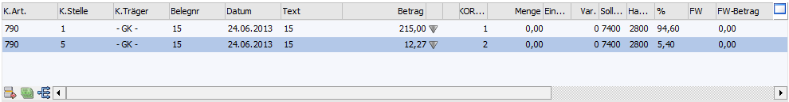
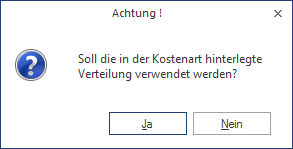

Die Zusatzdatenfelder der Kostenrechnung können nur dann bearbeitet werden, wenn in einem der bebuchten Konten im Stammsatz eine aktive Kostenart eingetragen ist. Die Daten werden beim Absetzen der Buchung sofort in die WinLine KORE übergeben und gebucht.
Die Datenfelder für die Erfassung der Kostenrechnungsinformationen sind fix vorgegeben (siehe Beschreibung unten). Bei Verwendung von Kostenarten, Kostenstellen oder Kostenträgern die in der KORE inaktiv gesetzt wurden, erhalten Sie eine Warnmeldung (Buchungsprotokoll). Außerdem wird geprüft, ob der Benutzer die Berechtigung hat (WinLine KORE/Stammdaten/Kostenträger, -stellen, -arten), die eingegebene Kostenart und Kostenstelle bzw. den Kostenträger zu verwenden.

Ø K.Art
Eingabe der Kostenart, max. 20stellig, alphanumerisch. Die Kostenart, die bei dem angesprochenen Sachkonto hinterlegt wurde, wird vorgeschlagen und kann ggf. editiert werden. Wird eine Einzelkostenart angewählt, kann auch ein Kostenträger angesprochen werden. Bei Eingabe einer Gemeinkostenart bleibt das Aufteilungsfeld K.Träger/Proj für die Aufteilung gesperrt.
Ø K.Stelle
Eingabe der Kostenstellennummer, der der Betrag zugeordnet werden soll.
Wird eine Kostenart verwendet, in dessen Kostenartenstamm im Register Verteilen die Checkbox "Vor Anwendung bestätigen" aktiviert ist, wird vor dem automatischen Verteilen gefragt, ob die Verteilung durchgeführt werden soll. Ansonsten muss die Kostenstelle manuell eingetragen werden.

Ø K.Träger
Eingabe der Kostenträgernummer (Achtung: nur bei Einzelkosten möglich).
Hinweis
Nach Eingabe des Kostenträgers wird geprüft, ob das Buchungsdatum auch innerhalb der Laufzeit des Kostenträgers liegt. Ist das nicht der Fall, wird eine entsprechende Meldung ausgegeben, die Buchung kann aber trotzdem weiter erfasst werden.

Ø Belegnummer
Belegnummer, max. 20stellig, alphanumerisch. Die Belegnummer wird aus der zuvor erfassten Buchungszeile vorgeschlagen und kann ggf. editiert werden.
Ø Datum
Eingabe des Buchungsdatums, wird aus der Buchungszeile übernommen.
Ø Text
Buchungstext, max. 100-stellig, alphanumerisch, wird ebenfalls aus der Buchungszeile übernommen und kann pro KORE-Erfassungszeile geändert werden.
Ø Betrag
Wenn im Feld % ein Prozentsatz eingegeben wurde, füllt das Programm das Betragsfeld automatisch mit dem errechneten Wert aus. Dieser Betrag kann auch manuell eingegeben werden. Durch Drücken der F3-Taste wird der noch nicht aufgeteilte Betrag automatisch übernommen.
Durch Anklicken des  - Buttons wird, sofern der KORE-Betrag
nicht zur Gänze aufgeteilt wurde, eine neue KORE-Zeile erstellt, die die
gleichen Werte enthält, wie die Zeile, von der aus der Button betätigt
wurde.
- Buttons wird, sofern der KORE-Betrag
nicht zur Gänze aufgeteilt wurde, eine neue KORE-Zeile erstellt, die die
gleichen Werte enthält, wie die Zeile, von der aus der Button betätigt
wurde.
Das Symbol informiert Sie über eine vorgenommene KORE-Aufteilung.
Ø Menge
Eingabe der Anzahl der in der Kostenart hinterlegten Mengeneinheit.
Ø Einheit
Anzeige der im Kostenartenstamm hinterlegten Einheit (Stunden, Kilometer, etc.).
Ø Var.
Der Variator, der in der Kostenart für diese Kostenstellengruppe hinterlegt worden ist, wird automatisch aufgrund der aktuellen Kostenart vorgeschlagen, kann aber manuell übersteuert werden.
In der Tabelle können dann beliebig viele Kostenerfassungszeilen eingegeben werden, wobei der Buchungsbetrag zur Gänze aufgeteilt werden muss.
Ø Sollkonto
Hier wird das Sollkonto aus der korrespondierenden Sachbuchungszeile angezeigt.
Ø Habenkonto
Hier wird das Habenkonto aus der korrespondierenden Sachbuchungszeile angezeigt.
Ø %
Geben Sie ein, welcher Prozent-Anteil des im Feld Betrag eingetragenen Gesamtbetrages dieser Kostenstelle (diesem Kostenträger) zugeordnet werden soll. Das Feld kann auch einfach (mit ENTER) übergangen werden, wenn Sie den Teilbetrag direkt im darauffolgenden Feld eintragen möchten.
Solange der Gesamtbetrag nicht zur Gänze aufgeteilt ist, kann die Aufteilung nicht verlassen werden (Meldung: Der Buchungsbetrag wurde nicht zur Gänze aufgeteilt). Im Feld Restbetrag wird der noch aufzuteilende Wert angezeigt.
Wenn Splitbuchungen mit Kostenaufteilung erfasst werden, werden die bereits gebuchten Werte mit angezeigt.
Informationsfelder
Ø FW
Wurde die Buchung in einer Fremdwährung erfasst, wird hier der verwendete Fremdwährungscode angezeigt. Dieser kann nicht verändert werden.
Ø FW-Betrag
Der Netto-Fremdwährungsbetrag wird angezeigt.
Ø Kostenart
Auf welche Kostenart erfolgt die Aufteilung, die gerade bearbeitet wird.
Ø Kostenstelle
Auf welche Kostenstelle erfolgt die Aufteilung, die gerade bearbeitet wird.
Ø Kostenträger
Auf welchen Kostenträger erfolgt die Aufteilung, die gerade bearbeitet wird.
Wurde der KORE-Betrag zur Gänze aufgeteilt, kann die KORE-Erfassung durch Drücken der Pfeil-nach-Unten-Taste verlassen werden - man gelangt automatisch in die nächste Buchungszeile.
Tabellenbuttons KORE-Fenster

Ø Entfernen
Bei Klicken dieses Buttons wird die angewählte Zeile gelöscht.
Ø KORE wiederherstellen
Wird dieser Button angeklickt, werden alle bisherigen Änderungen im KORE-Bereich rückgängig gemacht.
Ø Aufteilen
Beschreibung zur KORE-Wiederherstellen finden Sie im Abschnitt KORE-Periodenaufteilung
Ø Verteilungsschlüssel auswählen
Ist eine Kostenart mit einem Verteilungsschlüssel eingetragen, öffnet sich durch einen Doppelklick auf diesen Button das Fenster "Buchen - Auswahl Kostenarten-Verteilungsschlüssel". In diesem Fenster werden die ausgewählte Kostenart mit Nummer und Bezeichnung, sowie die Buchungsnummer und das Buchungsdatum zur Info angezeigt. Über die Combobox "Verteilungsschlüssel" kann ein anderer im Kostenartenstamm zu dieser Kostenart hinterlegter Verteilungsschlüssel oder kein Verteilungsschlüssel ausgewählt werden.
Wird ein anderer Verteilungsschlüssel ausgewählt und mit dem Button OK oder der F5-Taste bestätigt, werden die neuen Verhältniszahlen entsprechend berechnet und die Angaben in der KORE-Tabelle geändert.

Ø Ausgabe Excel
Durch Anwahl des Buttons "Ausgabe Excel" wird der Inhalt der Tabelle nach Microsoft Excel übergeben.
Ø Tabelleneinstellungen speichern
Die Spalten einer Tabelle können grundsätzlich an beliebige Positionen verschoben, bzw. in der Breite entsprechend angepasst werden. Durch Anwahl des Buttons "Tabelleneinstellungen speichern" werden die Einstellungen benutzerspezifisch gespeichert und bei dem nächsten Aufruf des Programmpunktes wieder vorgeschlagen.
Ø Gesamteinstellungen speichern
Im Gegensatz zu "Tabelleneinstellungen speichern" können mit "Gesamteinstellungen speichern" mehrere Tabellenaufbauten gespeichert und nach Wunsch geladen werden. Zusätzlich werden Sonderfunktionen der Tabelle (z.B. "Spalte gruppieren") ebenfalls bei der Speicherung bedacht.